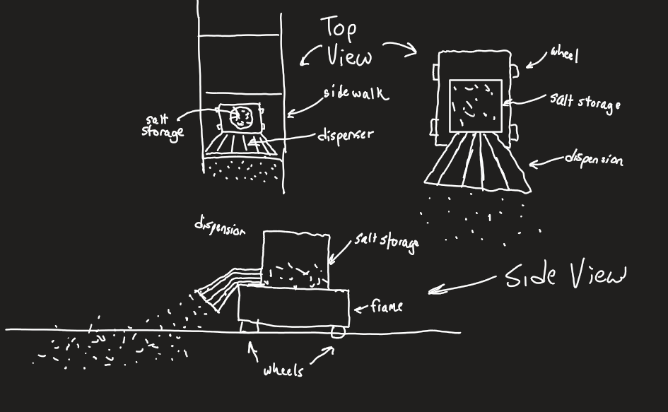
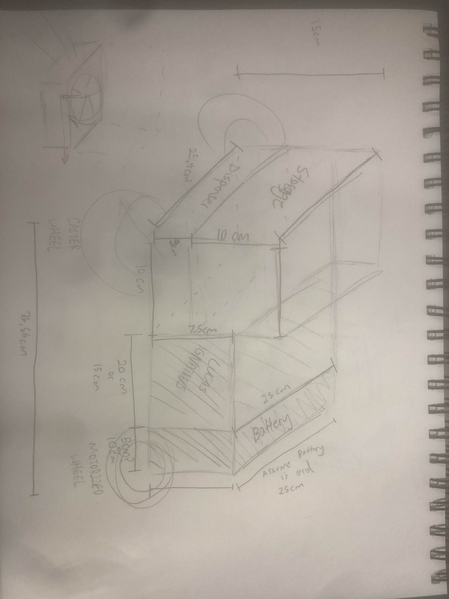
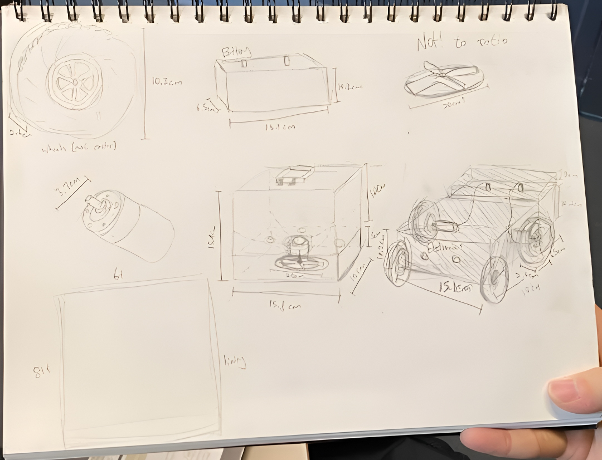
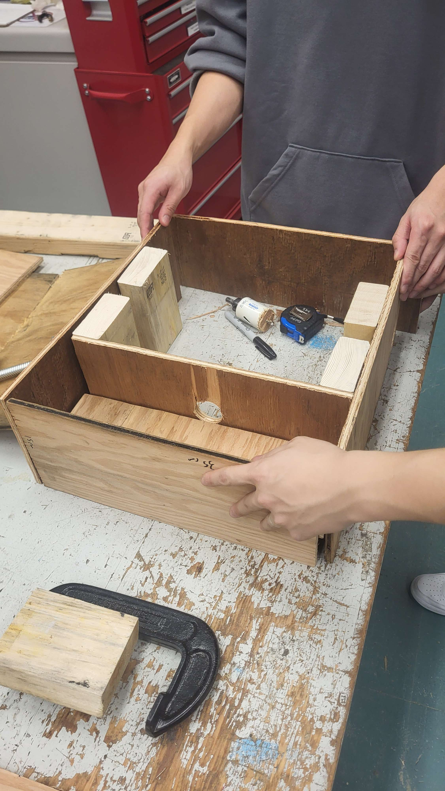
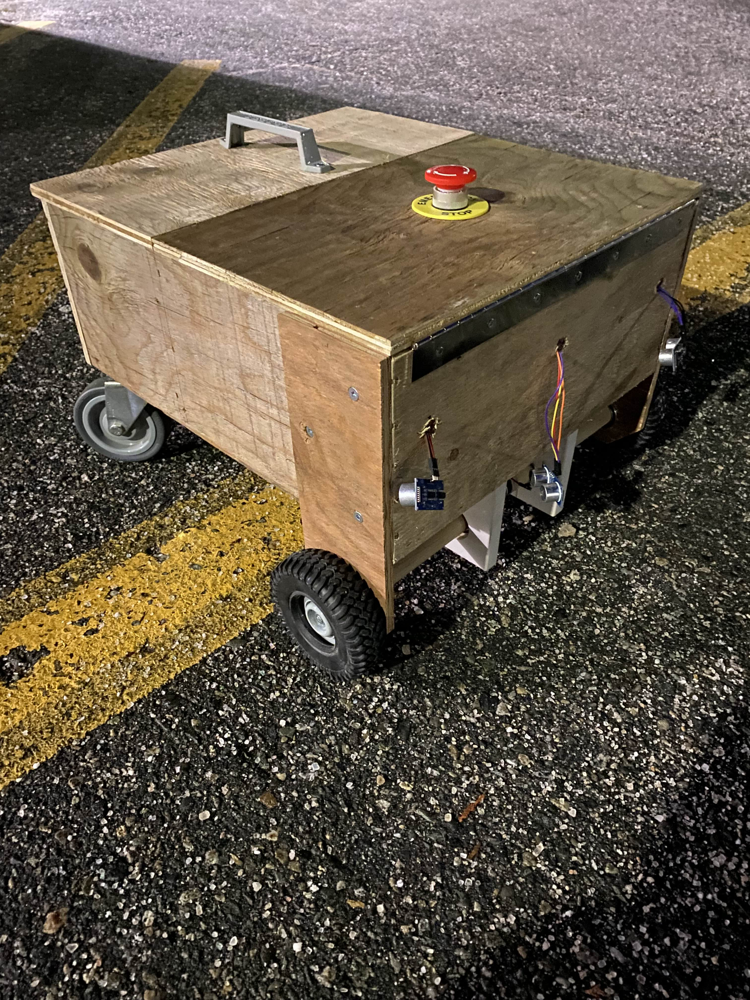

MECHANICAL DESIGN · AUTOMATION
Automated Salter
A first-year, first-semester group engineering project focused on designing and building an automated salter. The goal was to develop a prototype capable of moving along a sidewalk and dispensing salt while accounting for obstacles and the edge of the path. My main contribution was developing the design model. I then helped translate the design into a physical prototype through hands-on construction, wood cutting and assembly.
01. Project Overview
The project involved developing an automated machine designed to distribute salt along a sidewalk. The proposed system combined a mobile platform, a salt dispensing mechanism and electronic controls. In addition to designing the physical structure, the project required consideration of how the machine would move, detect its surroundings and control the dispensing process.
Working as part of a group, I was responsible for developing the design model. After the design stage, I also participated in physically building and assembling the prototype.

02. Design & Modelling Process
I started by developing a design model to establish the overall structure and arrangement of the machine. This allowed us to visualize the proposed system before committing to the physical construction.
As the project developed, the design was revised to account for practical considerations and the requirements of the prototype. This included thinking about the frame, dimensions, placement of components and how the different parts would fit together.


My contribution: I developed the design model and worked on revising the structure before construction. I then helped turn the design into a physical prototype by cutting wood, building the frame and assembling the different parts.
03. Proposed System Design
Beyond the physical structure, the project required planning how the automated system would operate. The proposed design combined mechanical, electronic and software elements.
Salt Dispensing Mechanism
The proposed dispensing approach used a spinning disk positioned below the salt container. The movement of the wheels was also considered as part of the mechanism for opening the dispensing hatch.
Electronics & Hardware
The initial electronics plan considered the following components and requirements:
- Microcontroller: Raspberry Pi 4 Model B.
- Drive motor: 12 V DC gear motor, 125 RPM.
- Power: A 15,000 mAh power bank was considered, with a separate motor battery still to be determined.
- Lighting: LED strip using SMD 5050 chips.
Software & Automation
The intended software functions included autonomous movement, obstacle and cliff detection, control of the salt dispenser motor and a mobile application for remote-control override.
- Autonomous movement along the sidewalk.
- Obstacle detection to respond to objects in the machine's path.
- Cliff or edge detection to help prevent the machine from leaving the sidewalk.
- Control of the salt dispensing motor.
- Remote-control override through a mobile application.
04. Safety Design & Emergency Stop
Safety was an important consideration when designing the automated salter. Since the machine was intended to move autonomously using powered motors, we needed a way to stop its operation immediately if something went wrong.
To address this, we implemented an emergency stop button and positioned it in an easily accessible location on the salter. This allowed the operator to quickly reach the button and stop the machine if it malfunctioned or behaved unexpectedly.
Emergency Stop Implementation
The emergency stop was incorporated into the physical prototype rather than remaining only a proposed feature. Its accessible placement was an intentional design decision, allowing for quick operator intervention during operation.
This reinforced an important engineering principle: an automated system should not only perform its intended function, but also provide a practical way for an operator to intervene when necessary. Considering accessibility and safety during the design process helped make the prototype more practical to operate.

05. Engineering Challenges & Solutions
Throughout the project, several challenges had to be considered across the hardware, electronics and software. Our approach involved researching options, communicating between different areas of the project and looking for practical solutions.
Hardware — Sourcing Components
Challenge: Finding and purchasing
the necessary hardware and materials for the
prototype.
Approach: We considered visiting
local hardware stores, such as Home Depot, and
checking additional online suppliers to find
suitable components.
Electronics — Motor Power Requirements
Challenge: Determining an
appropriate battery and power setup for the
motors. The power requirements of the motors
had to be considered separately from the
other electronics.
Approach: We researched the
hardware requirements and communicated between
the electronics and mechanical sides of the
project to better understand the power needs.
Software — Detecting the End of the Sidewalk
Challenge: Developing a way
for the salter to stop at the end of a sidewalk
rather than continuing forward.
Approach: We considered combining
sensor inputs to detect obstacles and sidewalk
edges. This was intended to help the system
recognize its surroundings and respond
appropriately.
Safety — Responding to Malfunctions
Challenge: Considering what
would happen if the machine malfunctioned
during autonomous operation.
Approach: I identified the
importance of including an emergency stop
so the operator could interrupt the machine's
operation if something went wrong.
06. Physical Construction & Assembly
Once the design work was completed, I helped with the physical construction of the salter. This involved working with the wood and other materials, cutting pieces to size and assembling the structure.
Moving from the model to the physical prototype required practical adjustments during construction. This gave me experience with the hands-on side of engineering design, where the proposed structure had to be translated into something that could actually be built.


07. Prototype Movement & Testing
The following clips show the physical prototype during movement and testing. They provide a closer look at the machine beyond the final presentation.
08. Final Project Presentation
The final video below is the presentation prepared for our professors and peers. It brings together the project concept, design direction and completed prototype.
09. Reflection & Takeaways
This project gave me an early opportunity to experience the process of taking an engineering idea from a design model to a physical prototype. I learned that developing a design involves more than deciding how something should look; it also requires thinking about materials, construction, component placement, power requirements and how the system will operate.
My involvement in both modelling and physical construction helped me understand the connection between design decisions and practical implementation. It also introduced me to the importance of safety considerations when designing an automated machine.